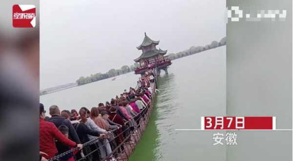
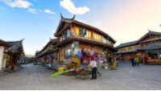

众人蜂拥赏湖吊桥上游玩，致吊桥不堪重负被压弯！惊险一幕引围观
- 人民资讯
- 发布时间：03-09 14：38 人民网人民科技官方账号
3月7日，安徽合肥，周末为游湖赏景，众人竟蜂拥而至吊桥游玩，因人多加重吊桥恐不堪重负引众人围观！ 网友看后直呼惊险，表示这样的场面竟没有人限流
延伸阅读 外出旅行安全注意事项
- 一、提前预约、错峰出行。关注旅游景点游客接待流量控制提示，不扎堆、不聚集、不聚餐，出行戴口罩，做好自我安全防护,遵守并自觉执行疫情防控要求、措施。
- 二、自觉接受体温检测。到外地或进入景区，自觉接受体温检测、出示健康码、扫码登记。如有不适，自觉向当地疾控部门报告或到医院进行健康检查。
- 三、关注天气、阳光出行。出游时关注气象和有关部门发出的预警提示，尽量避开恶劣天气和自然灾害的地区和地段。遇雷雨、热带风暴、大风、台风、泥石流、滑坡、洪水、海啸、地震等恶劣天气和自然灾害时，应远离危险地区和危险地段，切勿到景区禁止进入的区域游览。要听从带队导游的安排，及时采取措施，做好自我保护。不私自游览，不脱离团队。
- 四、关注出行警示、安全旅行。密切关注卫健、旅游、外交等有关部门发布的出行提示、警示，了解目的地天气、卫生、交通和社会治安情况，提前评估旅行风险。谨慎或暂勿前往疫情发生中、高风险地区，恐怖袭击频发、政局动荡不稳或发生重大疫情、自然灾害的国家和地区。慎重参与高空、高速、涉水、探险等高风险项目，确保旅游安全。
- 五、选择正规旅行社。参团报名要选择正规的旅行社，认清旅行社的资质，或登录官方网站进行查询，不要找黑社、黑门市部和超范围经营的旅行社参团，也不要通过微信群参团。 特别提醒：外地旅行社、景区设立在本市的办事处，未取得经营旅行社业务的资质，其组团行为属于违法经营。
- 六、购买旅游意外险。为自己的快乐旅程购买一份旅游意外险，最大限度地保障自己的利益。旅游责任险只是针对因旅行社的责任造成的赔偿，它不能涵盖旅游者在旅游期间发生的所有意外事故。
- 七、签订旅游合同。报名参团前要详细查看旅游合同约定内容，向旅行社询问有关住宿标准、旅游线路、购物点、自费项目等内容，签订并保存好正规的旅游合同。如发生意外情况，可作为保障个人权益的重要凭证。
- 八、注意交通安全。自驾出游，要做好车况和证件检查，确保车况良好和证件齐全。要遵守交通规则、文明驾驶。不要超速驾驶、酒后驾驶、疲劳驾驶。
- 九、文明有礼出游，合理合法维权。要文明出游，爱惜生态环境，不随地乱扔垃圾，不随意投喂动物、践踏花草。遵守公共秩序，不大声喧哗，不在公共场合吸烟，不推搡拥挤，不追逐打闹。保护文物古迹，不乱刻乱画，爱惜公共设施。遵守旅游目的地国家和地区法律法规，尊重当地宗教和民族习惯。如遇旅游服务质量纠纷，要理性协商，妥善保存证据，及时拨打全国旅游服务热线号码“12301”，合理合法维权。
-
十、注意自我防护
注意饮食安全。出游时要注意饮食卫生，防止病从口入和不科学的饮食习惯造成的身体不适或疾病。
谨慎海边游泳。要到有管理、有防护的正规滨海浴场，在规定的游泳区域内活动，携带必要的保护设备，如游泳圈等。最好结伴而行，不私自下水，防止溺水事故发生。
小心山区旅游。到山区和地质复杂的景区旅游，要防止滑倒、跌倒和迷失，注意观察景区指引，跟随导游行进，不要到无防护的危险地段。
请自觉遵守当地政府及有关部门发布的公告、禁令，切勿进入未开发、未对公众开放的自然保护区、峡谷、湖泊、水库、无人岛、网红景点等不明区域开展游览、探险、戏水、露营等活动，以免发生意外。 - 举报/反馈
发表评论
相关文章
出门旅游半年才发现，这四样用品要随时携带，关键时刻很......
全国正委员石文先：建议在高速常年设立一个免费出入口
出门旅游半年才发现，这四样用品要随时携带，关键时刻很......
全国正委员石文先：建议在高速常年设立一个免费出入口
出门旅游半年才发现，这四样用品要随时携带，关键时刻很......
全国正委员石文先：建议在高速常年设立一个免费出入口